Настройка SQL Server для отправки email писем
Описание
В этой статье будет разобран один из способов настройки SQL Server для отправки email уведомление. Для этого нам понадобятся следующие "компоненты":
- SQL Server
- Microsoft SQL Server Management Studio
- Доступ к SQL серверу с ролью администратора
- SMTP сервер
- Данные для подключения к SMTP серверу
Если у вас возникли проблемы на каких-либо этапах, обратитесь за помощью к вашим специалистам, устраните ошибки и продолжайте дальше.
Подготовка сервера
Проверим текущее состояние сервис-брокера, выполнив запрос:
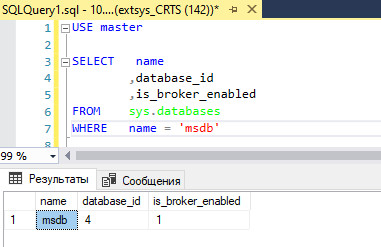
Если в поле is_broker_enabled указано значение 0, то выполним следующий запрос:
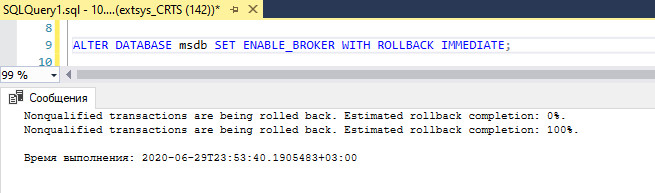
Операция должна выполниться без ошибок, а результат предыдущего запроса должен показать 1 в поле is_broker_enabled
Включаем опцию DatabaseMail XPs через системную процедуру sp_configure, выполнив следующий запрос:
GO
sp_configure 'show advanced', 1 -- Включаем расширенное отображение списка конфигурации
RECONFIGURE
GO
sp_CONFIGURE 'Database Mail XPs', 1 -- включаем опцию использования email
RECONFIGURE
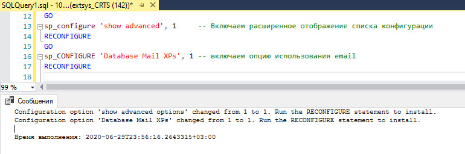
Запрос должен выполниться без ошибок. Для проверки включения опций необходимо выполнить процедуру sp_configure:
Проверяем, что для каждой из конфигураций, поля config_value и run_value имеют значение 1.
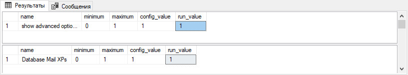
Создание аккаунта
Для создания аккаунта используется процедура sysmail_add_account_sp. Процедура sysmail_add_account_sp имеет гораздо больше параметров, включая порт сервера, логин, пароль и т.д. Узнать подробнее можно по ссылке sysmail_add_account_sp
Выполним следующий запрос для создания аккаунта:
-- Формируем переменные для аккаунта
DECLARE @account_name varchar(100) = 'test_account';
DECLARE @description varchar(100) = 'test account description'
DECLARE @email_address varchar(100) = (SELECT CAST(CONNECTIONPROPERTY('local_net_address') AS varchar) + '@SQLServer');
DECLARE @display_name varchar(100) = (SELECT 'test message '+ CAST(CONNECTIONPROPERTY('local_net_address') AS varchar) +' server');
DECLARE @mailserver_name varchar(100) = '10.30.1.58'
-- Создание аккаунта
EXECUTE msdb.dbo.sysmail_add_account_sp
@account_name = @account_name, -- Название аккаунта
@description = @description, -- Описание аккаунта
@email_address = @email_address, -- Адрес отправителя
@replyto_address = @email_address, -- Адрес для ответа на сообщения
@display_name = @display_name, -- Отображаемое имя отправителя в сообщении
@mailserver_name = @mailserver_name; -- Адрес SMTP сервера
Запрос должен выполниться без ошибок.
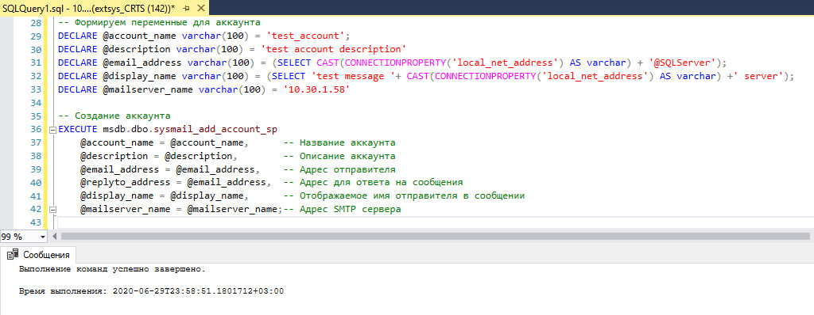
Создание профиля
Для создания профиля используется процедура msdb.dbo.sysmail_add_profile_sp. Подробнее о процедуре создания профиля sysmail_add_profile_sp
Выполним следующий запрос, который создаст для нас профиль
-- Формируем переменные для профиля
DECLARE @profile_name varchar(100) = 'test_profile';
DECLARE @description varchar(255) = 'test profile description'
-- Создание профиля
EXECUTE msdb.dbo.sysmail_add_profile_sp
@profile_name = @profile_name, -- Название профиля
@description = @description; -- Описание профиля
Запрос должен выполниться без ошибок
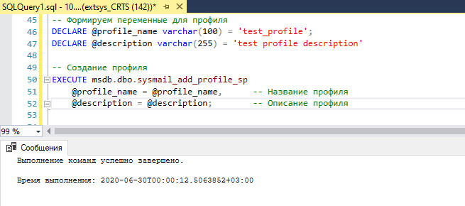
Добавление аккаунта в профиль
Далее необходимо добавить аккаунт в профиль, для этого будем использовать процедуру msdb.dbo .sysmail_add_profileaccount_sp. Подробнее о процедуре добавления аккаунта к профилю sysmail_add_profileaccount_sp
Выполним следующий запрос, который добавит аккаунт в профиль
-- Формируем переменные для профиля
DECLARE @profile_name varchar(100) = 'test_profile';
DECLARE @account_name varchar(100) = 'test_account';
DECLARE @sequence_number int = 1;
-- Добавляем аккаунт в профиль
EXECUTE msdb.dbo.sysmail_add_profileaccount_sp
@profile_name = @profile_name, -- Название профиля
@account_name = @account_name, -- Название аккаунта
@sequence_number = @sequence_number; -- Порядковый номер аккаунта в профиле
@sequence_number - порядковый номер аккаунта в профиле, так как наш профиль новый, то добавляемый аккаунт будет под номером 1.
Запрос должен выполниться без ошибок.
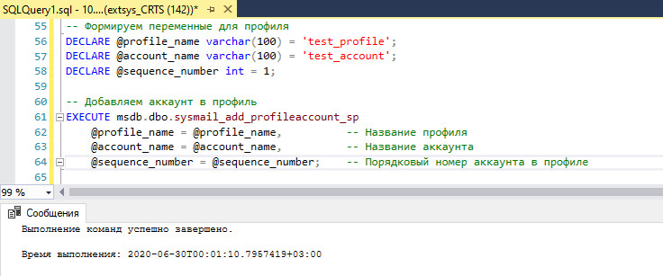
Предоставление разрешения на использование профиля
Для предоставления разрешения на использование профиля используется процедура msdb.dbo.sysmail_add_principalprofile_sp.
Публичный профиль доступен для всех пользователей в базе данных msdb, хотя пользователи также должны быть членами роли DatabaseMailUserRole для выполнения sp_send_dbmail.
Подробнее о процедуре предоставления прав профилю sysmail_add_principalprofile_sp
Выполним следующий запрос, который сделает профиль открытым (публичным)
-- Формируем переменные для профиля
DECLARE @profile_name varchar(100) = 'test_profile';
DECLARE @principal_name varchar(100) = 'public';
DECLARE @is_default int = 1;
-- Делаем профиль публичным
EXECUTE msdb.dbo.sysmail_add_principalprofile_sp
@profile_name = @profile_name, -- Название профиля
@principal_name = @principal_name, -- Статус профиля
@is_default = @is_default; -- Профиль по умолчанию
Запрос должен выполниться без ошибок.
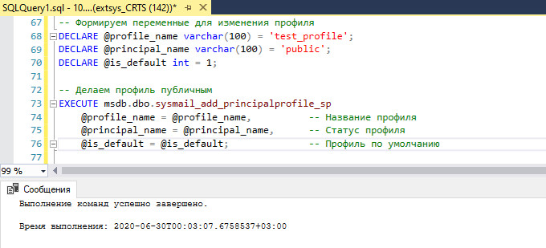
Проверяем отправку email сообщения
Для отправки писем используется процедура sp_send_dbmail, подробнее о процедуре sp_send_dbmail.Мы используем минимальный набор для тестирования и выполним следующий запрос:
-- Отправляем email сообщение
EXEC msdb.dbo.sp_send_dbmail
@Profile_name = 'test_profile', -- Название профиля
@Recipients = 'vladislav.zagoskin@rt.ru', -- Адресаты через ;
@body = 'Тестовое письмо', -- Тело письма
@body_format = 'TEXT', -- Формат тела письма
@Subject = 'Проверка'; -- Тема письма
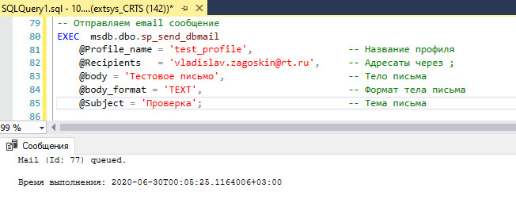
Результатом должно быть присланное сообщение на указанную почту:
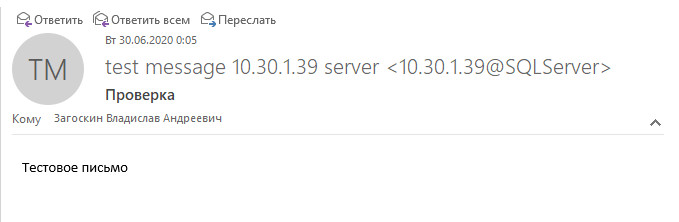
Удаление
Чтобы удалить аккаунт из профиля, можно выполнить процедуру sysmail_delete_profileaccount_sp с указанием профиля и аккаунта:
EXECUTE msdb.dbo.sysmail_delete_profileaccount_sp
@profile_name = 'test_profile',
@account_name = 'test_account'
Для удаления аккаунта можно воспользоваться процедурой sysmail_delete_account_sp с указанием имени аккаунта:
Для удаления профиля можно воспользоваться процедурой sysmail_delete_profile_sp с указанием имени профиля:
Альтернативный вариант
SQL Server предоставляет UI интерфейс для настройки отправки email писем, для этого нужно подключиться к серверу и в обозревателе объектов найти пункт Компоненты Database Mail и запустить его.
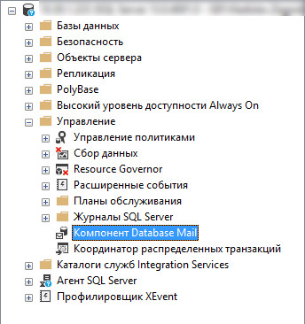
Откроется интерфейс для настройки.